Show other secondary papers
Nearly Isotropic Quantum-Critical Transport in Single-Crystal CeNiC2
Authors: Hanming Ma, Jun Gouchi, Dilip Bhoi, Toru Shigeoka, Bosen Wang, J. -G. Cheng, Yoshiya Uwatoko
Type: experiment · Category: strongly correlated electrons · PDF: https://arxiv.org/pdf/2608.25616v1
Analysis basis: full PDF text, analyzed in chunks
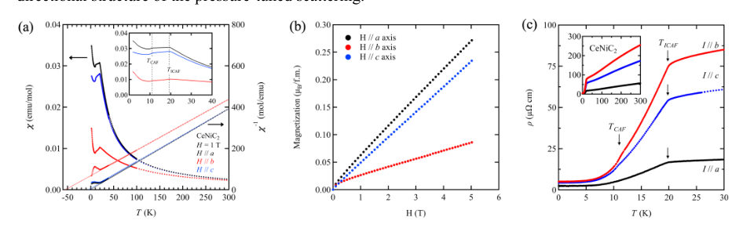
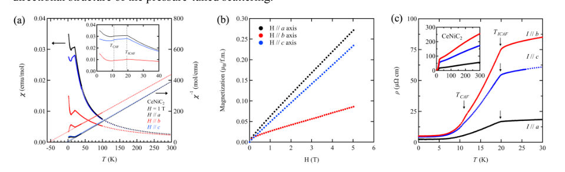
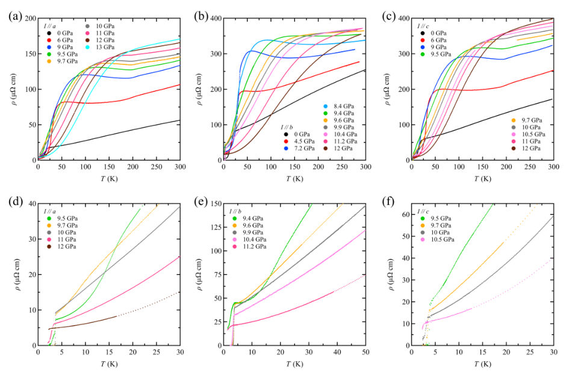

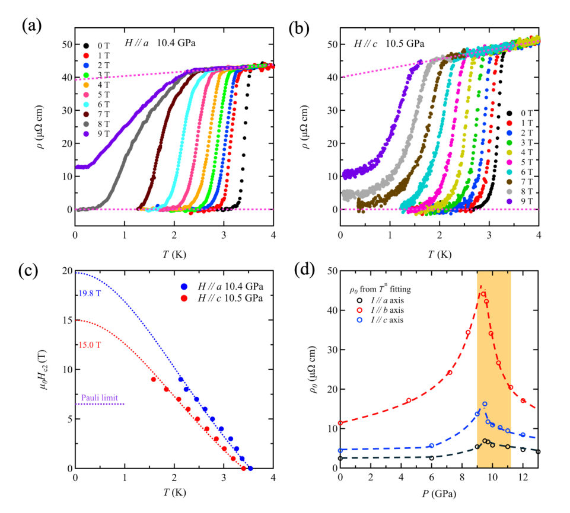
Summary. This experimental work investigates the quantum critical transport in the heavy-fermion superconductor CeNiC2 using single crystals. By measuring resistivity along all crystallographic axes under pressure, the authors found a common, nearly isotropic evolution near the superconducting dome. This strongly suggests that valence fluctuations, rather than simple magnetic fluctuations, are the primary source of the critical scattering responsible for superconductivity.
Why it may be interesting. While focused on condensed matter, the concept of identifying a universal, isotropic critical scattering mechanism that dictates pairing symmetry is relevant to understanding emergent quantum phases in strongly interacting systems.
Detailed structure
Main problem. To determine the directional character of critical scattering in the quantum-critical regime of CeNiC2, distinguishing between wave-vector-selective magnetic scattering and more local electronic channels.
Main result. The common evolution of resistivity across all crystallographic axes suggests a nearly isotropic quantum-critical transport regime, implicating valence fluctuations as the leading source of critical scattering rather than simple low-dimensional spin fluctuations.
Method. The study uses high-quality single crystals to measure pressure-dependent, temperature-dependent, and field-dependent resistivity along the a, b, and c crystallographic axes.
Model / system. The physical system is the heavy-fermion metal CeNiC2, which exhibits superconductivity under high pressure, allowing investigation near a quantum critical point (QCP).
Key observables. Resistivity ($ ho$) dependence on temperature ($T$) and pressure ($P$); residual resistivity ($ ho_0$); superconducting transition temperature ($T_c$); and upper critical fields ($H_{c2}$).
Important parameters / regimes. Critical pressure range ($P_c \approx 9.5-10$ GPa); temperature dependence exponent ($n \approx 1$); and magnetic field strengths (up to 9 T).
Assumptions / limitations. The analysis assumes that the common evolution across axes points to a universal, isotropic critical mechanism, and that the power-law fitting accurately captures the critical scattering behavior.
Figures summary. Figures illustrate the common sequence of magnetic suppression, Kondo scale growth, and the superconducting dome across all three current directions under pressure, alongside field dependence measurements.
Paper structure. The paper progresses by first establishing the cleaner transport regime in single crystals, then mapping the common pressure evolution of magnetic order and superconductivity across all axes, culminating in the conclusion that valence fluctuations govern the critical transport.
Abstract
Pressure-induced superconductivity and $T$-linear resistivity have been reported in polycrystalline CeNiC$_2$, but orientational averaging has left the directional character of the critical scattering unresolved. We report pressure-dependent resistivity of high-quality single crystals for current along each crystallographic axis. These crystals have substantially lower residual resistivity and a slightly higher maximum onset $T_c$ than the polycrystalline sample, placing superconductivity in a cleaner transport regime. Near $P_c \approx 9.5-10$ GPa, the normal-state resistivity becomes nearly $T$-linear along every axis, the fitted residual resistivity is strongly enhanced, and superconductivity forms a narrow dome. For $I \parallel b$, the $T$-linear normal state remains nearly unchanged in magnetic fields up to 9 T applied along $a$ and $c$; the upper critical field is large and only moderately anisotropic. The common evolution along all three axes establishes a nearly isotropic quantum-critical transport regime, inconsistent with a simple low-dimensional spin-fluctuation picture and implicates valence fluctuations as the leading source of critical scattering associated with the superconducting dome.
Numerical Direct Scattering Transform for Dark Solitons
Authors: Ilya Mullyadzhanov, Sergey Dremov, Andrey Gelash
Type: theory · Category: other · PDF: https://arxiv.org/pdf/2608.26054v1
Analysis basis: full PDF text, analyzed in chunks
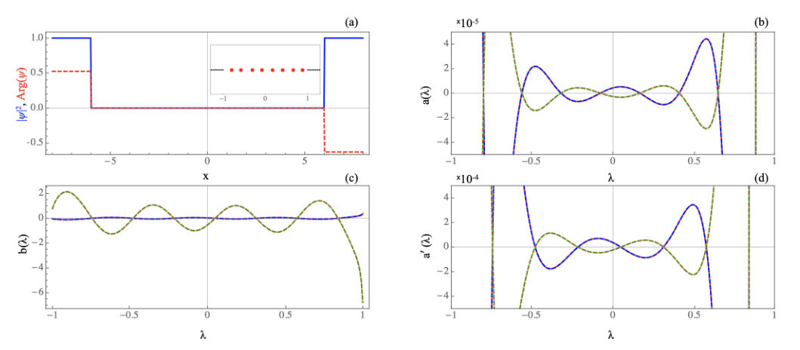
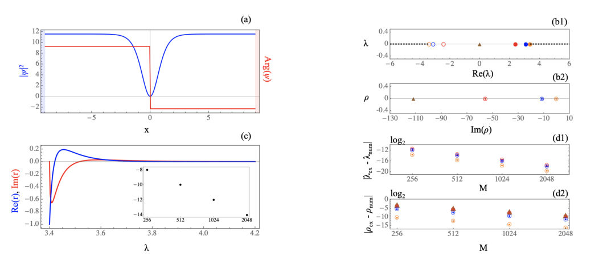
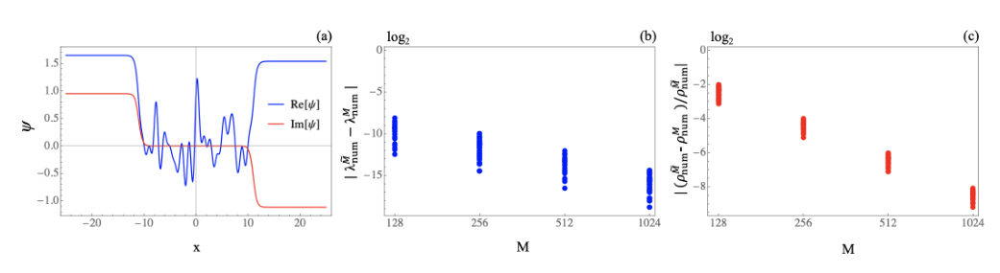
Summary. This paper introduces a numerical Direct Scattering Transform (DST) algorithm to analyze dark solitons governed by the defocusing Nonlinear Schrödinger Equation. By solving the auxiliary Zakharov-Shabat problem numerically, the authors can accurately determine the complete scattering data, including soliton parameters. This robust method is valuable for analyzing complex wave fields in optical and hydrodynamical systems.
Why it may be interesting. This work provides a powerful, robust numerical tool (DST) to analyze complex wave phenomena like dark solitons in nonlinear media, which is highly relevant to quantum optics and Bose-Einstein condensate dynamics.
Detailed structure
Main problem. The paper develops a numerical Direct Scattering Transform (DST) scheme to characterize dark solitons in the defocusing Nonlinear Schrödinger Equation (dNLSE).
Main result. The scheme successfully computes the full scattering data, including discrete eigenvalues and norming constants, for various potential profiles, demonstrating high accuracy through testing on known analytical cases.
Method. The methodology involves numerically solving the auxiliary Zakharov-Shabat scattering problem using a transfer matrix approach, supplemented by high-precision arithmetic for accurate parameter recovery.
Model / system. The primary model is the defocusing Nonlinear Schrödinger Equation (dNLSE), which describes the evolution of wave fields in defocusing media. The analysis is applied to potentials such as the inverse step potential and hyperbolic tangent hollows.
Key observables. Scattering data $\{ \lambda_n, ho_n \}$ (discrete eigenvalues and norming constants) and the continuous reflection coefficient $r(\lambda)$.
Important parameters / regimes. The spectral parameter $\lambda$ is real, and the analysis is performed under constant-amplitude boundary conditions ($\psi o A e^{i\Theta_\pm}$).
Assumptions / limitations. The DST reconstruction is stated to be possible asymptotically at large times, and the method requires careful handling for the zero eigenvalue case ($\lambda_0=0$).
Figures summary. Figures demonstrate the numerical verification of the DST by comparing computed scattering coefficients and norming constants against known analytical results for the inverse step and hyperbolic tangent potentials, including convergence tests for multiple solitons.
Paper structure. The paper introduces the DST for the dNLSE, details the mathematical framework using the Zakharov-Shabat system and transfer matrices, derives explicit formulas for benchmark potentials (inverse step, $ anh(x)$), and validates the full algorithm using these analytical solutions and complex test cases.
Abstract
We introduce a numerical direct scattering transform scheme for dark solitons of the nonlinear Schrodinger equation, enabling the identification and complete characterization of nonlinear coherent structures in defocusing media with a continuous-wave (CW) background. Our scheme is based on numerically solving the auxiliary Zakharov-Shabat scattering problem with CW boundary conditions and on analytically derived expressions that relate the elements of the transfer matrix to the scattering data for dark solitons and continuous-spectrum waves. To test our approach, we consider two analytically solvable cases of the scattering problem: i) rectangular, and ii) hyperbolic tangent hollows in the CW background, which can contain an arbitrary number of dark solitons, with known scattering data. We revisit the analytical derivations and obtain a complete set of soliton parameters represented by discrete eigenvalues and norming constants. By supplementing the direct scattering transform algorithm with high-precision arithmetic to accurately recover soliton norming constants, we provide a robust method to analyze data from numerical or natural experiments on complex wave fields in optical, hydrodynamical, and other physical systems.
Origin of High-Temperature Antiferromagnetic Order in a van der Waals Material
Authors: Rabindra Basnet, Hari Paudyal, Gicela Saucedo Salas, Nicholas P. Butch, Durga Paudya, Ramesh C. Budhani
Type: both · Category: strongly correlated electrons · PDF: https://arxiv.org/pdf/2608.25209v1
Analysis basis: full PDF text, analyzed in chunks
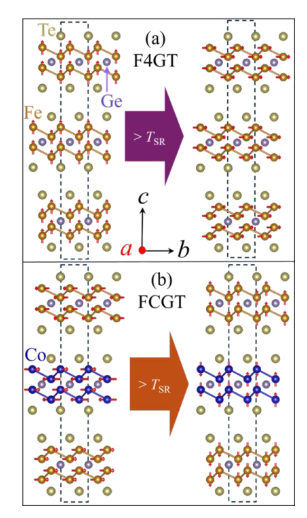
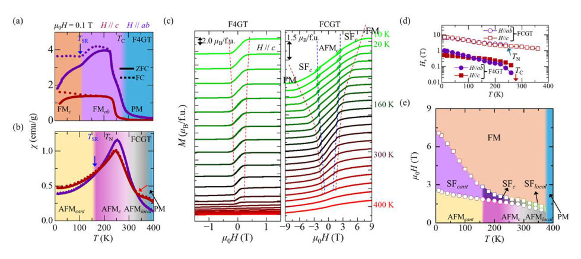
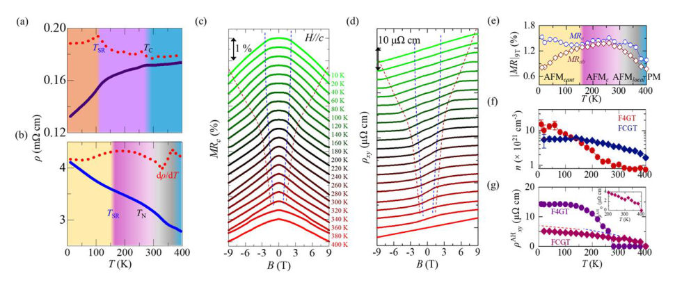
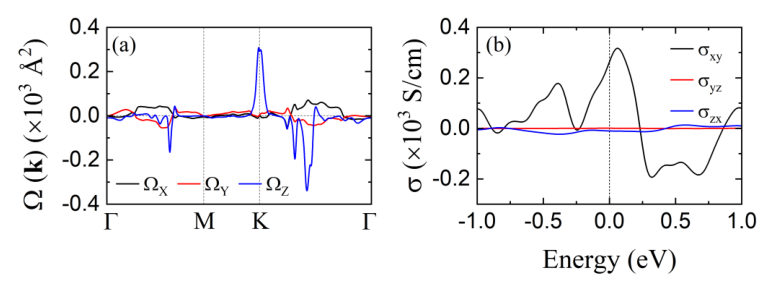
Summary. This work investigates the origin of high-temperature antiferromagnetism in the vdW material $( ext{Fe}_{0.65} ext{Co}_{0.35})_4 ext{GeTe}_2$. By combining experiments and DFT calculations, the authors attribute the high $T_N$ to a complex interplay between Co-driven magnetic correlations and the itinerant-localized nature of the $3d$ electrons. This establishes the material as a promising platform for next-generation antiferromagnetic spintronics.
Why it may be interesting. The concept of itinerant-localized duality in stabilizing high-$T_N$ magnetism is highly relevant to understanding strongly correlated electron systems, which often exhibit complex magnetic ground states beyond simple mean-field theories.
Detailed structure
Main problem. The paper aims to unravel the physical origin of the unusually high Néel temperature ($T_N \approx 250 ext{ K}$) in a van der Waals (vdW) itinerant antiferromagnet.
Main result. The high $T_N$ is stabilized by a unique interplay involving layer-selective Co substitution, robust AFM interactions driven by Co moments, and the itinerant–localized duality of the $3d$ electrons.
Method. The study combines experimental measurements (magnetometry, specific heat, transport) with advanced theoretical calculations, including DFT incorporating Hubbard parameters.
Model / system. The physical system is the newly identified vdW compound $( ext{Fe}_{0.65} ext{Co}_{0.35})_4 ext{GeTe}_2$, which is a Co-substituted derivative of $ ext{Fe}_4 ext{GeTe}_2$. The magnetism is governed by the correlated $3d$ electrons in this layered structure.
Key observables. Néel temperature ($T_N$), magnetic susceptibility ($\chi(T)$), magnetization ($M(H)$), specific heat ($\gamma$), and electronic structure details like the Density of States at the Fermi level ($ ext{D}(E_F)$).
Important parameters / regimes. The high $T_N$ ($\approx 250 ext{ K}$), the effective Hubbard parameter ($U_{ ext{eff}} = 4 ext{ eV}$), and the magnetic field strength ($ ext{H}_S \approx 7 ext{ T}$).
Assumptions / limitations. The analysis assumes that the magnetic behavior can be understood by modeling the interplay between itinerant (Stoner-like) and localized (exchange-like) magnetic interactions.
Figures summary. Figures summarize the magnetic phase space in the T-H plane, showing transitions between PM, $ ext{AFM}_{ ext{local}}$, $ ext{AFM}_c$, and field-induced phases, alongside transport measurements showing negative magnetoresistance.
Paper structure. The paper progresses by establishing the material's magnetic ground state via measurements, using DFT to model the electronic structure and magnetic ordering, and finally synthesizing these results to propose the physical mechanism responsible for the high $T_N$.
Abstract
While Van der Waals (vdW) itinerant antiferromagnets with high Neel temperatures (TN) are highly desirable for spintronics, they remain relatively scarce. Here, we unravel the physical origin of the unusually high TN (= 250 K) in the newly identified vdW compound (Fe0.65Co0.35)4GeTe2. The substitution of Co in Fe4GeTe2 induces layer-selective Fe-Co ordering and stabilizes a robust antiferromagnetic (AFM) state primarily driven by Co moments. The AFM order is further strengthened by enhanced electronic correlations of quasi-localized Co 3d-states at the Fermi level, giving rise to an itinerant-localized duality of the 3d electrons. This interplay generates strong magnetic correlations well above TN and stabilizes low-temperature spin canting with a possible nontrivial Berry curvature. Our results establish (Fe0.65Co0.35)4GeTe2 as a rare material bridging fundamental magnetic interactions with potential applications in AFM spintronics.
PCB-Integrated CoPt Micromagnets for Magnetophoresis
Authors: Melissa Mitchell, Henrique Mira, Simon Bending, Chris Bell, Ali Mohammadi
Type: both · Category: other · PDF: https://arxiv.org/pdf/2608.25732v1
Analysis basis: full PDF text, analyzed in chunks
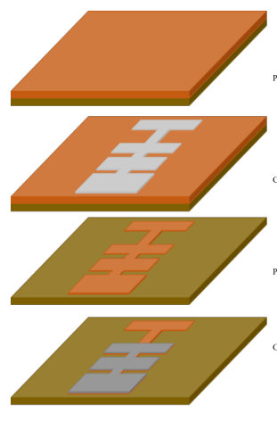
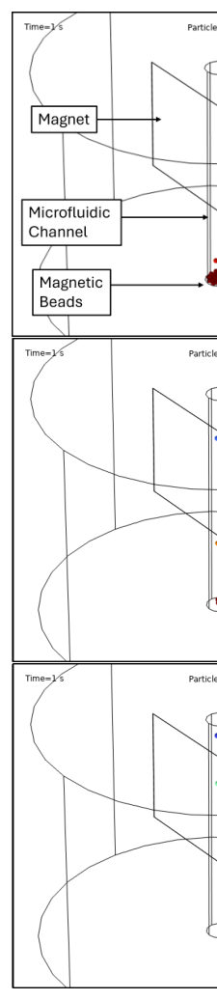
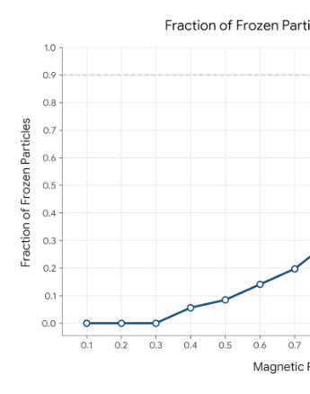
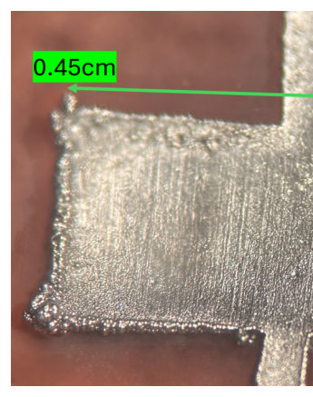
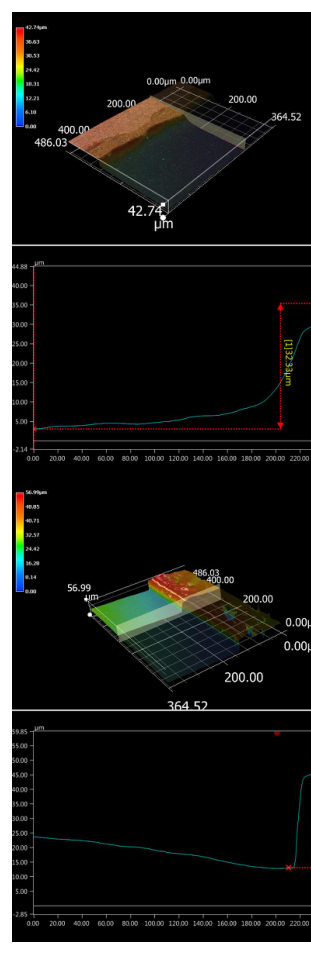
Summary. This paper details the creation of a novel, scalable magnetic platform by electroplating and annealing Cobalt-Platinum (CoPt) micromagnets onto Printed Circuit Boards. The resulting magnets exhibit significantly enhanced magnetic properties, which are then used to experimentally demonstrate the precise trapping of magnetic nanoparticles within microfluidic channels. This work merges advanced materials science with microfluidics for high-throughput biomedical applications.
Why it may be interesting. While the core application is in bio-sensing, the development of highly controllable, patterned magnetic materials (CoPt) on flexible, scalable substrates (PCB) represents an advanced materials engineering achievement relevant to creating complex, patterned electromagnetic environments.
Detailed structure
Main problem. The goal is to improve the throughput and precision of biotechnology processes, such as magnetophoresis, by creating a scalable magnetic platform capable of generating strong, controlled magnetic field gradients at the microscale.
Main result. The researchers successfully developed and characterized CoPt micromagnets integrated onto PCB substrates, achieving a six-fold increase in in-plane magnetic remanence after annealing. These magnets were experimentally validated by successfully trapping magnetic nanoparticles in microfluidic channels, consistent with FEA simulations.
Method. The work combines materials science (electroplating, annealing, XRD, VSM, EDX) with microfluidics and computational modeling (FEA using COMSOL) to characterize and test the magnetic trapping capability.
Model / system. The physical system is a magnetic platform built using CoPt micromagnets electroplated onto PCB substrates. The magnetic force governing particle trapping is modeled using the magnetophoretic force equation, $F_m = 2\pi r_p^3 \mu_0 \mu_r K abla| ext{H}|^2$.
Key observables. In-plane magnetic remanence (increased from 0.24T to 1.4T), ordered L10 phase in XRD, and the percentage of trapped magnetic nanoparticles as a function of applied magnetic field strength.
Important parameters / regimes. Annealing temperature ($600^\circ ext{C}$), magnet dimensions ($2 ext{mm} imes 4.5 ext{mm}$), and the magnetic field strength required for trapping (up to $\sim 1.4 ext{T}$).
Assumptions / limitations. The FEA model assumes the easy magnetization axis of the CoPt film is parallel to the out-of-plane field, and the process requires careful photoresist removal before high-temperature annealing.
Figures summary. Figures illustrate the fabrication process, FEA simulations showing particle trapping at various field strengths (500mT, 1T, 1.5T), and experimental characterization data including VSM comparisons (before/after annealing) and XRD spectra confirming the L10 phase.
Paper structure. The paper follows a structure detailing the need for scalable magnetic platforms, describing the fabrication process (electroplating on PCB), presenting the material characterization (XRD, VSM, EDX) showing property enhancement, and finally validating the performance through microfluidic trapping experiments and comparison with FEA modeling.
Abstract
Integration of magnetic material with scalable microfluidic platforms can significantly improve the throughput and precision in biotechnology processes. In this work we have developed a new magnetic platform based on printed circuit board (PCB) technology. Cobalt-Platinum (CoPt) micromagnets are electroplated on copper pads with an arbitrary footprint on a Kapton substrate to enable generation of different magnetic field gradients. The magnets are characterized by XRD and VSM, before and after thermal annealing. The ordered L10 phase appear in XRD results after annealing at 600 °C, and VSM results show around six times increase for in-plane magnetic remanence from 0.24T to 1.4T. The near equiatomic ratios of Co:Pt is confirmed by EDX observations. The performance of these magnets is experimentally validated by trapping magnetic nanoparticles in microfluidic channels. These results are in excellent agreement with FEA models presented in COMSOL Multiphysics.
Probing bulk superconductivity in centrosymmetric Te-doped PtBi$_2$ single crystals
Authors: Kilian Srowik, Pablo Pedrazzini, Soumen Ash, Oksana Kvitnitskaya, Andrii Kuibarov, Susmita Changdar, Oleksandr Suvorov, Volodymyr Bezguba, Alexander Kordyuk, Rafał Kurleto, Dawid Wutke, Reza Firouzmandi, Robert Kluge, Swarnamayee Mishra, Alexander Mistonov, Saicharan Aswartham, Jochen Geck, Sergey Borisenko, Laura T. Corredor, Bernd Büchner
Type: experiment · Category: other · PDF: https://arxiv.org/pdf/2608.25093v1
Analysis basis: full PDF text, analyzed in chunks
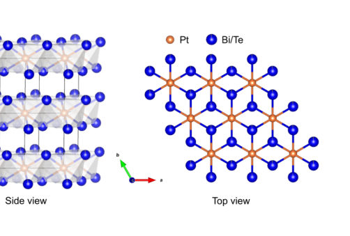

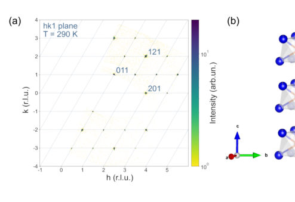
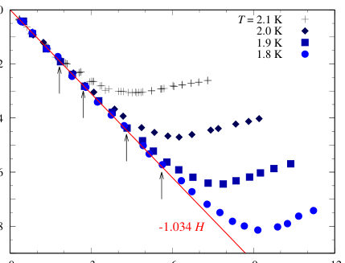
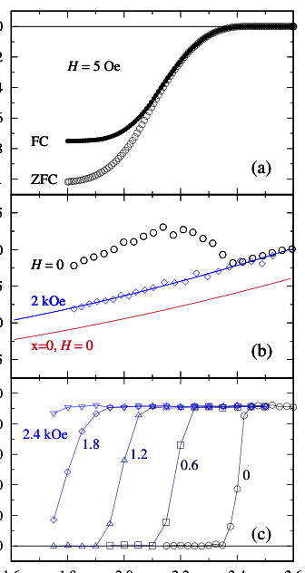
Summary. This paper reports on the synthesis and characterization of Te-doped PtBi2 single crystals, which exhibit a structural transition to a centrosymmetric phase. This structural change is correlated with the observation of robust bulk superconductivity at Tc ~ 2.4 K, confirmed by multiple transport and thermodynamic measurements. The findings link the restoration of inversion symmetry to the superconducting state in this topological material.
Why it may be interesting. The work provides a clear experimental link between crystal symmetry (centrosymmetry restoration) and the emergence/enhancement of bulk superconductivity in a topological material class, which is highly relevant to understanding pairing mechanisms in correlated superconductors.
Detailed structure
Main problem. The study investigates the bulk superconductivity in Te-doped PtBi2 single crystals, contrasting the behavior with the parent non-centrosymmetric Weyl semimetal.
Main result. The doping induces a structural transition to a centrosymmetric phase, which correlates with the observation of robust bulk superconductivity with a critical temperature of approximately 2.4 K.
Method. The research employed a combination of techniques including single crystal X-ray diffraction, magnetization/specific heat measurements, electrical resistivity, and ARPES.
Model / system. The system is Te-doped PtBi2 single crystals (PtBi1.96Te0.04), which undergo structural modification from a non-centrosymmetric P31m to a centrosymmetric P3m1 structure upon electron doping.
Key observables. Superconducting critical temperature (Tc), upper critical fields (Hc2), absence of Fermi arcs in ARPES, and bulk superconducting volume fraction.
Important parameters / regimes. Doping concentration (x=0.04), critical temperature (Tc ~ 2.4 K), and structural symmetry (P3m1).
Assumptions / limitations. The structural transition to the centrosymmetric phase is responsible for the observed bulk superconductivity enhancement.
Figures summary. Figures show X-ray scattering maps confirming the crystal structure and the electronic structure via ARPES, which shows the absence of Fermi arcs in the doped sample.
Paper structure. The paper establishes the context by contrasting the non-centrosymmetric parent material with the doped, centrosymmetric material. It then presents multiple characterization results (XRD, transport, thermodynamics, ARPES) to confirm the structural change and the emergence of bulk superconductivity, concluding with the physical implications of symmetry restoration.
Abstract
The Weyl semimetal $γ$-PtBi$_2$ has been shown to be one of the most promising novel materials, recently proposed as a topological i-wave superconductor. A crucial requirement for observing this physics is the absence of inversion symmetry in its trigonal $P31m$ crystal structure. Centrosymmetry has been reported to be readily restored in the $P\overline{3}m1$ structure upon electron doping, partially substituting Bi with as little as 2% Te. In this work, we synthesized Te-doped PtBi$_{2-x}$Te$_{x}$ samples and thoroughly investigated the bulk superconductivity of selected single crystals with nominal composition PtBi$_{1.96}$Te$_{0.04}$, exhibiting the highest superconducting volume fraction of $\sim100$%. Single crystal XRD measurements confirm the centrosymmetric $P\overline{3}m1$ structure in our samples, whereas bulk superconductivity with a critical temperature of $T_\mathrm{c} \approx 2.4\,$K was observed in magnetization and specific heat measurements. The upper critical fields for two different orientations were determined as $H^{\parallel}_{\mathrm{c2}}(0)\approx 6.3\,$kOe for in-plane and $H^{\perp}_{\mathrm{c2}}(0)\approx 4.7\,$kOe for out-of-plane magnetic fields. Robust superconductivity was also found in resistance and point contact measurements, where the latter showed a slight enhancement of the critical temperature up to $T_\mathrm{c} \sim 3\,$K. Finally, ARPES measurements corroborate the centrosymmetric structure of our samples, showing a single surface termination and the absence of Fermi arcs.
Quantum geometric signatures of Link-Unlink transitions and nonlinear Hall response in Hopf-link semimetals
Authors: Kamalesh Bera, Arijit Saha, Debashree Chowdhury
Type: theory · Category: other · PDF: https://arxiv.org/pdf/2608.25352v1
Analysis basis: full PDF text, analyzed in chunks
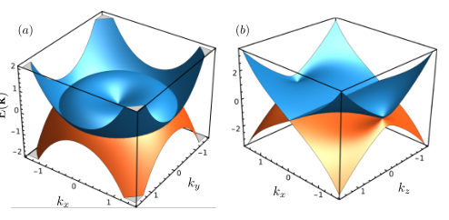
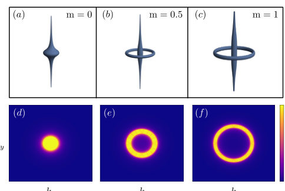
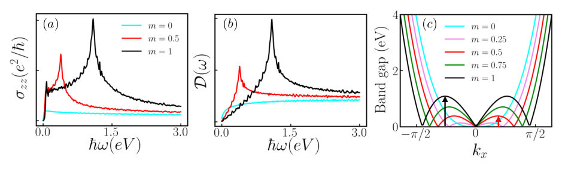
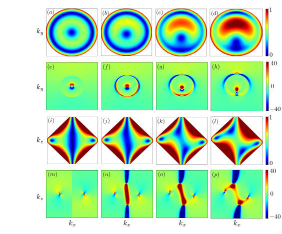
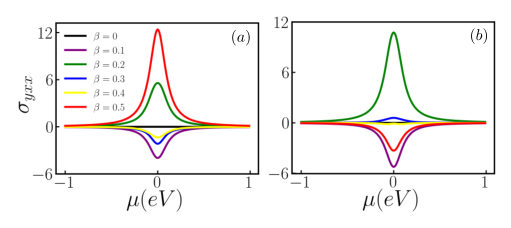
Summary. This work theoretically examines the quantum geometry of Hopf-link semimetals undergoing a link-unlink transition. It shows that while the system's inherent symmetry suppresses the nonlinear Hall effect, a small perturbation can activate a finite, intrinsic nonlinear response solely due to the quantum metric. This provides a deep understanding of topological transport mechanisms beyond conventional Berry curvature effects.
Why it may be interesting. The focus on intrinsic, symmetry-protected responses derived from geometric properties (quantum metric) provides a theoretical framework for understanding novel transport phenomena in topological materials, which is relevant to advanced condensed matter theory.
Detailed structure
Main problem. The paper investigates the quantum geometric signatures associated with Link-Unlink transitions and the resulting nonlinear Hall response in a specific topological material class.
Main result. The intrinsic nonlinear Hall conductivity, which is suppressed by symmetry in the unperturbed system, can be made finite by introducing a symmetry-breaking perturbation, revealing a purely quantum metric-driven response.
Method. The study employs theoretical calculations involving the Quantum Geometric Tensor (QGT), decomposing it into the quantum metric and Berry curvature, and analyzing the resulting nonlinear transport coefficients.
Model / system. The system studied is the Hopf-link semimetal, a topological material characterized by a nodal link-unlink transition. The analysis uses a low-energy continuum Hamiltonian derived from lattice models.
Key observables. Interband optical conductivity, the quantum metric components ($g_{\mu u}$), and the intrinsic nonlinear Hall conductivity (NLHC).
Important parameters / regimes. The mass parameter ($m$ or $m_0$) controls the topological transition between linked and unlinked phases.
Assumptions / limitations. The analysis relies on deriving a low-energy effective continuum model from initial lattice Hamiltonians and focusing on the intrinsic, $ au$-independent component of the nonlinear response.
Figures summary. Figures illustrate band dispersions showing nodal rings, the evolution of the quantum metric component $g_{zz}$ across the link-unlink transition, and the optical conductivity peaks distinguishing the linked phase.
Paper structure. The paper systematically introduces the topological system, derives the quantum geometric quantities (QGT, metric, curvature), analyzes the optical response to characterize the link-unlink transition, and finally calculates the nonlinear Hall response, highlighting the role of symmetry breaking.
Abstract
Quantum geometry, comprising of quantum metric and Berry curvature, plays a significant role in the electronic transport properties of solids. In this work, we theoretically investigate the quantum geometric properties of a Hopf-link semimetal, a distinct topological class that is charecterized by a nodal link-unlink transition. We compute the interband optical conductivity of the Hopf link, which effectively distinguishes between linked and trivial phases. While recent studies establish quantum metric dipole-mediated scattering-free nonlinear Hall effect, this effect becomes even more fascinating in systems where the Berry-curvature-dipole contribution to nonlinear Hall conductivity vanishes. Owing to the underlying $PT$ symmetry of the Hopf-link semimetal, the Berry curvature and its corresponding contribution to the nonlinear Hall effect are entirely suppressed. Consequently, by introducing an appropriate perturbation, a finite nonlinear Hall conductivity emerges solely due to the quantum metric in the Hopf semimetal. Notably, this purely intrinsic, symmetry-driven nonlinear response remains entirely unmixed with extrinsic components.